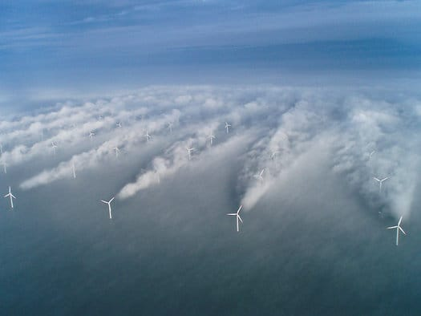

Ветряные мельницы 31 марта 2011 разное  Ветряки в марте 2011 года обеспечили 21 процент потребностей Испании в электричестве и впервые вышли на первое место среди источников электроэнергии в стране. Это очень круто, конечно. Картинко отсюда.